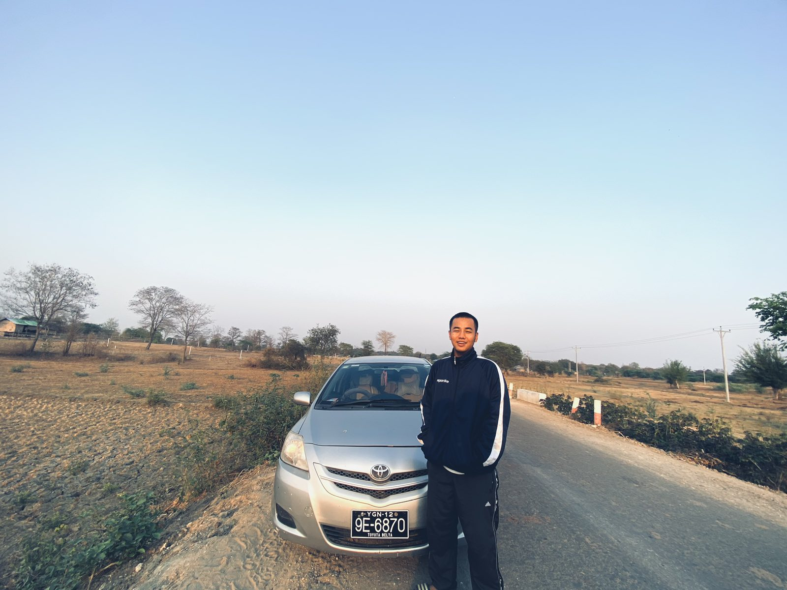
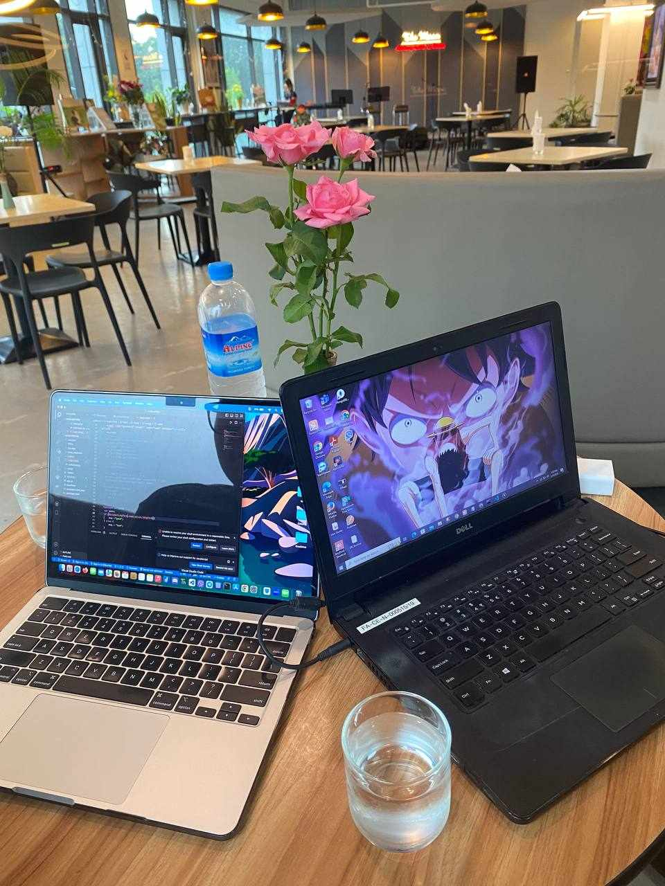

● ● ●SensitiveWordAnalyzer↗
# Look closer. Understand the evidence.
→ Defensive static analysis
→ Rule-driven file triage
→ Structured JSON & SARIF reports
Suspicious files. Clearer signals.
THU REIN OO · PERSONAL PORTFOLIO
I explore how systems work, how they break,
and what we can learn from the traces left behind.

Investigate carefully.
Build something useful.
Share the process.
01 / SELECTED WORK
# Look closer. Understand the evidence.
→ Defensive static analysis
→ Rule-driven file triage
→ Structured JSON & SARIF reports
Suspicious files. Clearer signals.
02 / FIELD NOTES
Investigations, walkthroughs, and the
occasional question
worth asking.
 SECURITY PERSPECTIVES
SECURITY PERSPECTIVES
A look at phishing and the limits of the protections we rely on.
Notes from source code, network, digital, and mobile forensics labs.
REVERSE ENGINEERING · MEDIUMWorking through the challenge and documenting the process.
FORENSIC DOCUMENT EXAMINATION · LINKEDINThinking about information security beyond the screen.
03 / THE COMMUNITY SIDE
I started Ech Tit to share what I learn about security, networking, and development. It’s where my lab notes become walkthroughs, and the things I figure out become useful to someone else.
Meet Ech Tit
A change of scenery. Same curiosity.04 / A LITTLE ABOUT ME
I’m Thu Rein Oo, a computer engineering student at Mae Fah Luang University and the founder of Ech Tit. My interests sit between digital forensics, cybersecurity, and building software.
I like learning by doing: writing a small tool, working through a forensics lab, then explaining what I found. This site is a collection of that work.
Computer Engineering
Level 5 in Computing
05 / KEEP THE CONVERSATION GOING
A project, a question, or a good security rabbit hole.
I’d
love to hear about it.